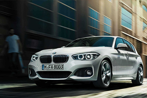

當一輛車的銷量，其中能有70％是新客戶，那怕它備受爭議，就車廠營利的角度來看，就是一款相當成功的作品。
這樣的例子不算多，但我舉Porsche Cayenne為例，你大概就有概念了。2002年問世的Cayenne成為Porsche繼911及Boxster的第3個車系，但你要知道，當時Porsche的擁護者都算是骨灰級玩家，只造跑車的Porsche卻為了營利推出了SUV！備受爭議的情況不亞於Ferrari近期採用渦輪動力。不過在2015年的今天，大家對Cayenne只剩下讚揚，沒有這個成功的試金石，也不會有接下來的Panamera及Macan等2款非「跑車」產品，更遑論918 Spyder這輛劃時代的油電混合超跑。至於今天我要提及的這輛車，同樣備受爭議也考驗市場口味，它就是BMW 2 Series Active Tourer/2 Series Gran Tourer。
首款前驅車型，但卻非唯一一款
時間拉回2012年巴黎車展，BMW的Concept Active Tourer概念車，讓車廠歷史中首款前驅車的消息甚囂塵上。沒錯，就是「前驅」！對於過往堅持後驅/四驅設計的BMW，這個消息讓不少Bimmer粉絲心碎。實際量產作品2 Series Active Tourer的4,342mm、1,800mm及1,555mm車身長寬高，明顯直接與Mercedes-Benz B-Class相抗衡，為了在成本及駕駛習慣上取得優勢，BMW開拓前驅車市場勢在必行。
前輪驅動車款的好處在於空間，因為前置引擎、前輪驅動，在減少傳動軸的設計下，第二排的乘坐空間可獲益不少，避免同級距中唯一堅持後驅的1 Series，因空間而被消費者所詬病的問題。至於這款名為UKL的全新底盤架構，事實上是先由集團中，前驅經典代表的MINI所採用，現行世代、代號F56的MINI車系，就是搭載了UKL底盤，而2系Active Tourer則是集團內第2款、品牌首款UKL底盤之作，而最新推出的第2代BMW X1，同樣也是在這個底盤平臺上誕生。
國內持續熱銷，接受度不受影響
先行推出的五人座2 Series Active Tourer顯然不把「操控」擺在第一順位，超過1.5米的車高搭配掀背設定，直接瞄準實用性導向的買家。2014年總代理汎德汽車導入218i、218d、225i等3款動力選擇，當時價格分別為153萬、166萬，以及198萬，十分親民，這樣的策略是否成功，從2015年5月份的銷量報告中還維持228輛的成績來看，總代理，以至於德國原廠，對於2 Series Active Tourer在臺灣市場的發展，應該是很滿意了。
然而2015年於國內上市的7人座2 Series Gran Tourer，我可以說這是BMW的「趁勝追擊」之作。在同一個底盤平臺基礎下，2 Series Gran Tourer當然與2 Series Active Tourer在同一時期研發，而非因為熱銷而緊急拉長追加的產品，從此可以看出，BMW如此規劃，自然是對於這款前驅作品信心十足而下足了賭注，方能在5人座大受歡迎之際，隨後追加7人座2 Series Gran Tourer，成功延續這款車在市場上的熱度。
我想，這些都在BMW的掌握之中。
更大的空間，讓選擇更彈性
外觀造型上，2 Series Gran Tourer維持與2 Series Active Tourer相同的車頭設計，雙腎型水箱護罩、LED頭燈組內的圓形光環，下保桿採用三孔式造型設計，都是BMW現行家族特徵。比較能讓人看出差別在於車側線條，從C柱之後為了爭取較大的第三排乘坐空間，2 Series Gran Tourer在車頂曲線展現方正厚實氣息，但卻不因此顯得突兀。就車身尺碼數據上，2 Series Gran Tourer長4,556mm、寬1,800mm、高1,612mm，軸距則為2,780mm，相比於2 Series Active Tourer的身段，車長增加了214mm，並挑高了57mm，軸距增加了110mm之多。
長軸版本的Gran Tourer車型，原廠共計推出有5座與7座的選擇，不過導入國內市場的部分，總代理僅推出三排、7座之車型，首波僅提供218d單一動力而售價則落在178萬，隨後又因消費者的期盼，又追加了汽油動力的218i，售價為167萬。其鎖定的是選購家庭用車的消費族群。採用電動翻起設定的第3座椅，翻折後創造出的車尾行李箱空間，容積為560公升，第二排座椅則同樣採用4/2/4可折式傾倒後座椅背，並能夠前後挪移達13公分，讓行李廂容積最大可擴充至1,820公升之多，相比2 Series Active Tourer的468公升/1510公升的乘載容積，有著不小幅度的成長。
註：總代理15/16年式218d Gran Tourer價格調漲1萬，來到179萬之譜。
嚴格來說，2 Series Gran Tourer的座椅配置比較像是5+2，也就是說第三排座椅還是比較適合嬌小體型或孩童搭乘。你一定會納悶，這種實用性被減半的第三排座椅，真有那麼大的市場價值？
其實這抓住了消費者心理中「可能會」的誘因，這類型買家未必將第三排座椅列為主要考量，但考量「可能會」在某些使用情況下使用到第三排，例如不時與親朋好遊的出遊，但並非常態性，所以不需選擇正統7人座MPV或SUV。另一種狀況，則是消費者希望有更大的空間使用性，不是覺得5人座的2 Series Active Tourer 太小，而是在有選擇比較下，擁有更大車室空間的2 Series Gran Tourer此刻就脫穎而出，畢竟與相同動力的218d Active Tourer僅有12萬元價差，這個代價其實相當值得。但無論怎麼選擇，BMW都是獲利的一方，而消費者也不會有所遺憾，兩全其美。
調整心態，勝過對手即可
當「操控」不再是主要訴求，2 Series Gran Tourer是否尚失BMW應有的味道？這其實是要看你怎麼去調整心態，與BMW的後驅車型相比，2 Series Gran Tourer肯定讓人失望，但與同級對手中，當空間及實用性對Mercedes-Benz B-Class造成壓力下，動態表現及駕馭感如果還能勝出，其實2 Series Gran Tourer就已經不負車廠的期望。剩下的，就看你是否還執著於藍白廠徽，是不是必須維持過往的運動風格了。
-

享60期0利率、低月付，BMW「榮耀創新專案」11月加碼實施中
BMW總代理汎德表示，11月份持續加碼實施2017年式BMW車型「榮耀創新專案」，凡11月交車領牌者另享特定車型優惠價格升級駕駛輔助套件、盲點偵測警示等配備...
-

趁勝追擊─BMW 2 Series Gran Tourer斯洛維尼亞試駕，市場沿革篇
當一輛車的銷量，其中能有70％是新客戶，那怕它備受爭議，就車廠營利的角度來看，就是一款相當成功的作品。今天我要提及的這輛車，同樣備受爭議也考驗市場口味，它就是BMW 2 Series Active Tourer/2 Series Gran Tourer...
-

戰力升級，2017年式BMW多數標配「智慧互聯駕駛服務」與iDrive 5.0介面
BMW總代理汎德公司於2016年9月26日公佈2017年式車型配備價格調整，主要將多數車型標準配備「BMW全功能智慧互聯駕駛服務」、並升級為「iDrive 5.0使用介面」...
-

不想承認也不行─BMW 2 Series Gran Tourer斯洛維尼亞試駕
在這趟試駕2 Series Gran Tourer的過程中，我實在很不想承認BMW也能將前驅車調校至如此境界，在這輛已達7人座設定的小型MPV，BMW仍讓駕駛手感直搗心窩，方向盤所能傳遞路感還是熟悉的BMW風味...
-

「沉重」的輕量化科技，BMW傳將縮限碳纖維車體使用
根據Automotive News Europe報導，鑑於碳纖維高昂的成本，BMW為了維持一定的利潤水準，正在縮限碳纖維的使用量，並將輕量化的目標轉移至其他材質，例如鋁合金以及高強度鋼材等...
-

調整配備139萬起入手、價格戰開打，BMW 118i與218i AT都會特式推出
BMW總代理汎德汽車於9月中旬，分別針對麾下118i以及218i Active Tourer，推出了名為都會版的特式車，此一特式版本主要是在配備上做出調整，同時價格也較一般常販版本調降許多...
-

放逐自己的旅程-2017 BMW 340i Gran Turismo M Sport 試駕報告
探索世界是人生的目的。相信很多人都曾想過放逐自己，或許在某一天你突然決定給自己放個假，到時候你會希望陪伴你的，就是BMW 3 Series Gran Turismo...
-

只做最強，BMW3系列運動房車
以駕駛樂趣風靡於車壇的BMW 3 Series，在每一回的世代更迭都帶給人無限驚喜。輔以全新設計的流體力學前、後進氣壩，讓3 Series顯得更有精神...
-

率性的優雅─BMW 420i Gran Coupé Luxury Line試駕體驗
BMW 取其經典車系6 Series之名，推出了6 Series Gran Coupé，擁有品牌旗艦7 Series的大器身段，卻又具備6 Series 雙門Coupé的瀟灑、帥氣，組合成線條絕美的四門跑房車...
-

BMW 3 Series Gran Turismo車款介紹
BMW 3 Series Gran Turismo小改款與3 Series其他成員相同，外觀與內裝都僅進行了小幅度的修改，重點同樣集中在動力單元更替，同時車名也因應動力數據而進行調整...
c2016 MediaBrilliance System Corporation. All Rights Reserved.